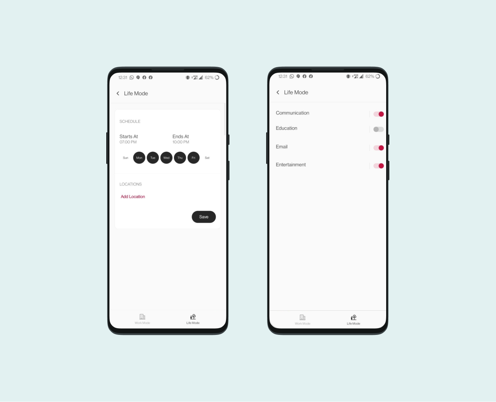
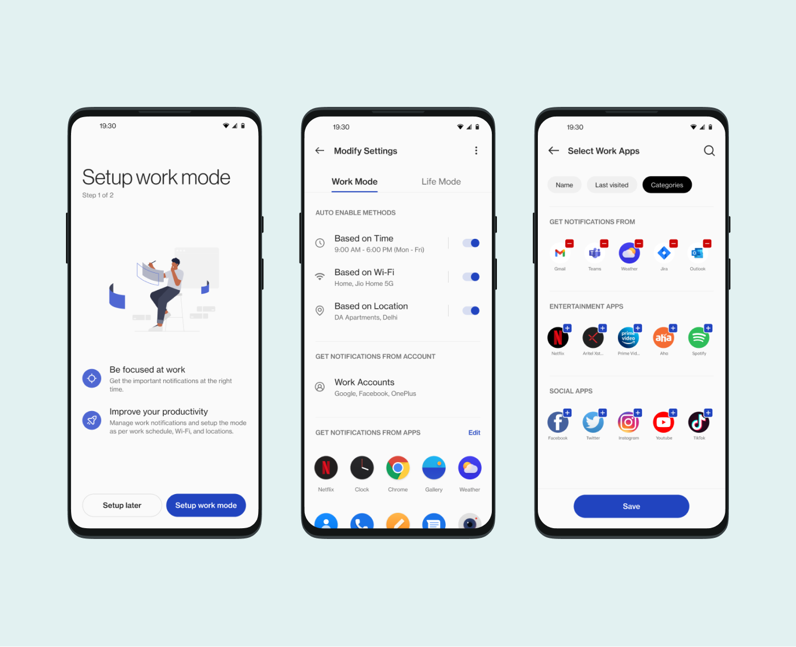
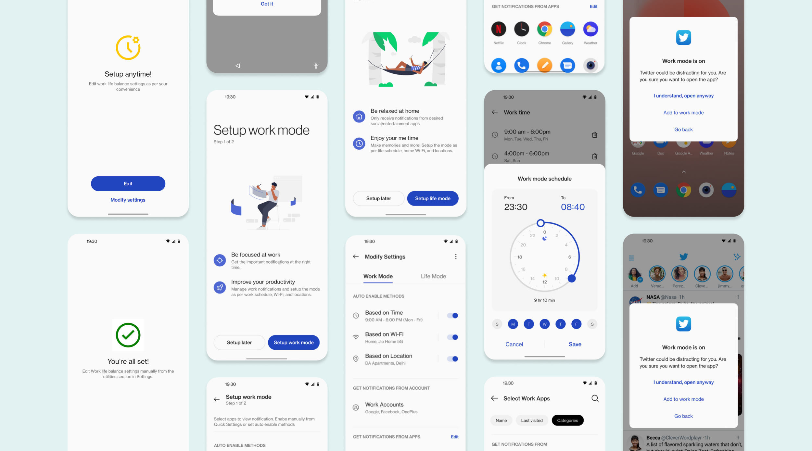
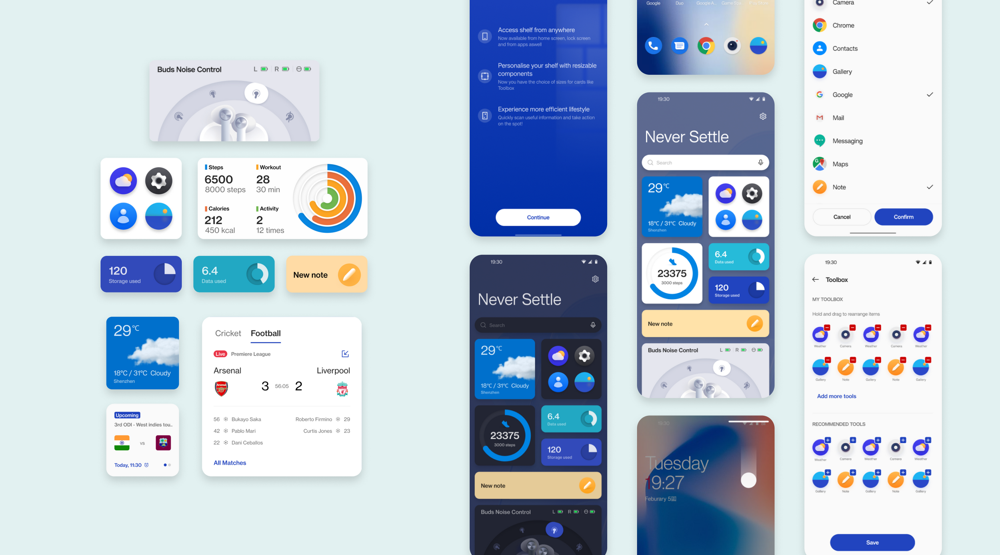

OxygenOS 12
During my time at OnePlus, I played a key role in enhancing the Work-Life Balance feature in OxygenOS 12. My focus was on simplifying the user flow and refining the design language to create a more intuitive, user-friendly experience.
Design Process and Iterations are confidential.
REIMAGINING WORK LIFE BALANCE
Work-Life Balance 2.0 aimed to help users balance work and personal life. The first version had issues with distractions, tricky setup, and limited customization. We redesigned it to make switching between work and life smoother and more intuitive.


SHELF
Discover customizable options with seamless OnePlus Watch and Buds integration. Access your digital life effortlessly with at-a-glance cards for weather, step counter, and headset control.

SCOUT
OnePlus Scout on OxygenOS is your one-stop search hub. Find anything on your phone directly from the app drawer, now with voice search for quicker results.
